Terraform؟الـ software مش بيخلص لما الـ code يشتغل على جهازك. ومش بيخلص لما الـ tests تنجح. ومش بيخلص لما حد يقولك "ship it" في الـ code review. الـ software مش بيخلص غير لما تسلمه للـ user.
الـ Software delivery دي عبارة عن كل الشغل اللي محتاج تعمله عشان تخلي الـ code متاح للعميل، زي إنك تشغل الـ code ده على production servers، وتخليه قادر يستحمل انقطاع الخدمة أو الزيادة المفاجئة في عدد الزوار (traffic spikes)، وتحميه من أي هجمات. قبل ما ندخل في تفاصيل Terraform، يستاهل إننا نرجع خطوة لورا ونشوف Terraform مكانه فين في الصورة الكبيرة بتاعة الـ software delivery.
في الفصل ده، هنتكلم في المواضيع دي:
إيه هو الـ DevOps؟
إيه هو الـ infrastructure as code؟
إيه هي فوايد الـ infrastructure as code؟
إزاي Terraform بيشتغل؟
إيه الفرق بين Terraform وأدوات الـ infrastructure-as-code التانية؟
DevOps؟في الماضي مش البعيد أوي، لو كنت عايز تعمل شركة software، كنت بتبقى محتاج تدير hardware كتير بنفسك. كنت بتجهز كباين و racks، تملأها بـ servers، توصل أسلاك، تركب تبريد، تعمل أنظمة كهرباء احتياطية، وهكذا. وكان منطقي إنك يكون عندك فريق، غالبًا اسمه الـ Developers (أو Devs)، مسؤول عن كتابة الـ software، وفريق تاني منفصل، غالبًا اسمه Operations (أو Ops)، مسؤول عن إدارة الـ hardware ده.
الفريق بتاع الـ Devs كان بيبني الـ application و "يرميه من فوق السور" لفريق الـ Ops. وكان على فريق الـ Ops إنه يشوف إزاي يعمل deploy ويشغل الـ application ده. معظم الشغل ده كان بيتعمل بشكل يدوي. جزء من ده كان غصب عنهم، لأن جزء كبير من الشغل كان له علاقة بتوصيل الـ hardware بنفسه (زي تركيب الـ servers في الـ racks وتوصيل كابلات الشبكة). بس حتى الشغل اللي فريق Ops كان بيعمله في الـ software، زي تنصيب الـ application والحاجات اللي بيعتمد عليها، كان غالبًا بيتم عن طريق تنفيذ أوامر بشكل يدوي على الـ server.
الموضوع ده بيمشي كويس شوية، بس مع نمو الشركة، بتبدأ تقابلك مشاكل. والسيناريو ده بيتكرر: عشان الـ releases بتتعمل يدويًا، كل ما عدد الـ servers يزيد، الـ releases بتبقى أبطأ، ومؤرفة، ونتائجها غير متوقعة. فريق الـ Ops بيغلط من وقت للتاني، فبينتهي بيك الحال بـ snowflake servers، ودي حالة بيكون فيها كل server له configuration مختلف ولو بحاجة بسيطة عن الباقيين (ودي مشكلة معروفة باسم configuration drift). نتيجة لده، عدد الـ bugs بيزيد. الـ Developers بيخلعوا نفسهم ويقولوا: "ما هي شغالة على جهازي!" الانقطاعات والـ downtime بيبقوا أكتر. فريق الـ Ops، اللي تعب من إن الـ pagers بتاعته بترن الساعة 3 الفجر بعد كل release، بيقلل وتيرة الـ releases لمرة كل أسبوع. بعدين مرة كل شهر. بعدين مرة كل ست شهور. قبل الـ release النص سنوي بأسابيع، الفرق بتبدأ تحاول تدمج كل مشاريعها مع بعض، وده بيؤدي لكمية merge conflicts ضخمة. محدش بيقدر يخلي الـ release branch مستقر. الفرق بتبدأ تلوم بعضها. بتتكون silos (مصطلح بيشير ان كل واحد قاعد فى جزيرة لوحدة يعني كله فى كوكب) والشركة بتقف تمامًا.
دلوقتي، فيه تحول جذري بيحصل. بدل ما الشركات تدير الـ datacenters بتاعتها، كتير منها بينقل على الـ cloud، وبيستفيد من خدمات زي Amazon Web Services (AWS) و Microsoft Azure و Google Cloud Platform (GCP). بدل ما يستثمروا بشكل كبير في الـ hardware، فرق Ops كتير بقت بتقضي كل وقتها بتشتغل على software، وبيستخدموا أدوات زي Chef، وPuppet، وTerraform، وDocker، وKubernetes. بدل ما يركبوا servers ويوصلوا كابلات شبكة، كتير من الـ sysadmins بقوا بيكتبوا code.
نتيجة لده، الـ Devs والـ Ops الاتنين بقوا بيقضوا معظم وقتهم شغالين على software، والفرق بين الفريقين مبقاش واضح زي زمان. ممكن لسه يكون منطقي إن يكون فيه فريق Dev مسؤول عن الـ application code وفريق Ops مسؤول عن الـ operational code، بس بقى واضح إن الـ Devs والـ Ops محتاجين يشتغلوا مع بعض بشكل أقرب. ومن هنا جه مفهوم الـ DevOps.
الـ DevOps مش اسم فريق أو مسمى وظيفي أو تكنولوجيا معينة. بالعكس، هو مجموعة من العمليات والأفكار والتقنيات. كل واحد عنده تعريف مختلف شوية للـ DevOps، بس في الكتاب ده، هنمشي بالتعريف ده:
الهدف من الـ DevOps هو إننا نخلي عملية الـ software delivery أكفأ بكتير جدًا.
بدل كوابيس الـ merge اللي بتاخد أيام، أنت بتدمج الـ code بشكل مستمر (continuously) وبتخليه دايمًا في حالة جاهزة للـ deploy. بدل ما تعمل deploy للـ code مرة كل شهر، تقدر تعمل deploy عشرات المرات في اليوم، أو حتى بعد كل commit. وبدل الانقطاعات والـ downtime المستمر، أنت بتبني أنظمة مرنة وبتصلح نفسها بنفسها (resilient, self-healing systems) وبتستخدم الـ monitoring والـ alerting عشان تكتشف المشاكل اللي مش بتتحل أوتوماتيك.
النتائج من الشركات اللي عملت تحول للـ DevOps مذهلة. على سبيل المثال، شركة Nordstrom لقت إنها بعد ما طبقت ممارسات الـ DevOps، قدرت تزود عدد الـ features اللي بتقدمها في الشهر بنسبة 100%، وتقلل العيوب بنسبة 50%، وتقلل وقت التنفيذ (الوقت من أول ما تيجي الفكرة لحد ما الـ code يشتغل في الـ production) بنسبة 60%، وتقلل حوادث الـ production بنسبة من 60% لـ 90%. وبعد ما قسم LaserJet Firmware في شركة HP بدأ يستخدم ممارسات الـ DevOps، الوقت اللي المطورين كانوا بيقضوه في تطوير features جديدة زاد من 5% لـ 40%، وتكاليف التطوير الإجمالية قلت بنسبة 40%. شركة Etsy استخدمت ممارسات الـ DevOps عشان تتحول من عمليات deploy نادرة ومسببة للضغط بتعمل انقطاعات كتير، لإنها تعمل deploy من 25 لـ 50 مرة في اليوم، مع انقطاعات أقل بكتير.
فيه أربع قيم أساسية في حركة الـ DevOps: الثقافة (Culture)، الأتمتة (Automation)، القياس (Measurement)، والمشاركة (Sharing) (وساعات بيختصروها في كلمة CAMS). الكتاب ده مش هدفه يقدم شرح شامل للـ DevOps (بص على ملحق ِa او أ عشان تشوف ترشيحات قراءة)، عشان كده أنا هركز بس على قيمة واحدة من القيم دي: automation.
الهدف هو automation أكبر قدر ممكن من عملية الـ software delivery. وده معناه إنك بتدير الـ infrastructure بتاعتك مش عن طريق إنك تدوس على حاجات في صفحة ويب أو تنفذ أوامر shell يدويًا، لكن عن طريق الـ code. وده مفهوم عادة بيتسمى infrastructure as code.
Infrastructure as Code؟الفكرة ورا الـ infrastructure as code (IaC) هي إنك بتكتب وتنفذ code عشان تعرف (define)، وتنشر (deploy)، وتحدّث (update)، وتمسح (destroy) الـ infrastructure بتاعتك. ده بيمثل تحول مهم في طريقة التفكير، بحيث إنك بتعامل كل جوانب الـ operations كأنها software—حتى الجوانب اللي بتمثل hardware (زي تجهيز الـ servers المادية). في الحقيقة، واحدة من الأفكار الأساسية في الـ DevOps هي إنك تقدر تدير كل حاجة تقريبًا بالـ code، وده بيشمل الـ servers، والـ databases، والشبكات، وملفات الـ logs، والـ application configuration، والـ documentation، والـ automated tests، وعمليات الـ deployment، وهكذا.
فيه خمس فئات رئيسية لأدوات الـ IaC:
Ad hoc scripts
Configuration management tools
Server templating tools
Orchestration tools
Provisioning tools
يلا نبص عليهم واحدة واحدة.
أبسط طريقة لـautomation أي حاجة هي إنك تكتب ad hoc script. بتاخد أي مهمة كنت بتعملها يدوي، تقسمها لخطوات منفصلة، تستخدم لغة الـ scripting اللي بتحبها (زي Bash أو Ruby أو Python) عشان تعرف كل خطوة من دول في code، وتشغل الـ script ده على الـ server بتاعك، زي ما هو واضح في شكل 1-1.
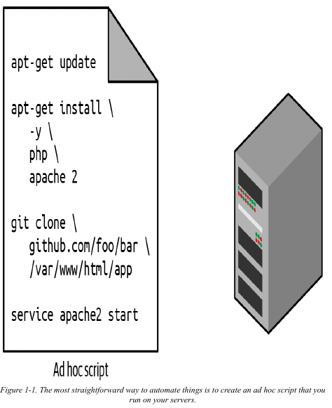
على سبيل المثال، ده Bash script اسمه setup-webserver.sh بيعمل configure لـ web server عن طريق إنه بيعمل install للـ dependencies، وبيسحب شوية code من Git repo، وبيقوّم Apache web server:
x
sudo apt-get update
sudo apt-get install -y php apache2
sudo git clone https://github.com/brikis98/php-app.git /var/www/html/app
sudo service apache2 startأحلى حاجة في الـ ad hoc scripts هي إنك تقدر تستخدم لغات برمجة مشهورة وعامة
(general-purpose)، وتقدر تكتب الـ code بأي طريقة تعجبك. وأسوأ حاجة في الـ ad hoc scripts هي إنك تقدر تستخدم لغات برمجة مشهورة وعامة، وتقدر تكتب الـ code بأي طريقة تعجبك العيب هنا مفيش طريقة كتابة موحدة .
في حين إن الأدوات اللي معمولة مخصوص للـ IaC بتقدم APIs مختصرة عشان تنجز مهام معقدة، لو أنت بتستخدم لغة برمجة عامة، هتحتاج تكتب code مخصوص تمامًا لكل مهمة. وكمان، الأدوات المصممة للـ IaC عادةً بتفرض structure معين على الـ code بتاعك، في حين إن مع لغة البرمجة العامة، كل developer هيستخدم أسلوبه الخاص وهيعمل حاجة مختلفة. ولا مشكلة من دول بتبقى حاجة كبيرة بالنسبة لـ script من 8 سطور بيعمل install لـ Apache، بس الموضوع بيبقى فوضى لو حاولت تستخدم ad hoc scripts عشان تدير عشرات الـ servers، والـ databases، والـ load balancers، والـ network configurations، وهكذا.
لو عمرك اضطريت تعمل maintain لـ repository كبير من الـ Bash scripts، هتبقى عارف إن الموضوع دايمًا تقريبًا بيتحول لكومة spaghetti code فوضوية ومستحيل تعملها صيانة (unmaintainable). الـ Ad hoc scripts ممتازة للمهام الصغيرة اللي بتتعمل مرة واحدة (one-off tasks)، بس لو أنت هتدير كل الـ infrastructure بتاعتك كـ code، يبقى لازم تستخدم أداة IaC معمولة مخصوص للمهمة دي.
Configuration ManagementChef، وPuppet، وAnsible كلهم أدوات configuration management، وده معناه إنهم مصممين عشان يعملوا install ويديروا software على servers موجودة فعلًا. على سبيل المثال، ده
Ansible role اسمه web-server.yml بيعمل configure لنفس الـ Apache web server اللي عملناه بالـ script اللي اسمه setup-webserver.sh:
xxxxxxxxxxnameUpdate the apt-get cache apt update_cacheyes
nameInstall PHP apt namephp
nameInstall Apache apt nameapache2
nameCopy the code from the repository gitrepo=https//github.com/brikis98/php-app.git dest=/var/www/html/app nameStart Apache servicename=apache2 state=started enabled=yesالكود شكله شبه الـ Bash script، بس استخدام أداة زي Ansible بتقدم عدد من المزايا:
قواعد كتابة الكود (Coding conventions)
Ansible بيفرض structure ثابت ومتوقع، وده بيشمل الـ documentation، و file layout، وparameters ليها أسماء واضحة، وإدارة الـ secrets، وهكذا. في حين إن كل developer بينظم الـ ad hoc scripts بتاعته بطريقة مختلفة، معظم أدوات
الـ configuration management بتيجي معاها مجموعة من القواعد (conventions) اللي بتخلي تصفح الكود أسهل.
الـ Idempotence
إنك تكتب ad hoc script يشتغل مرة واحدة مش صعب أوي؛ الصعب بجد إنك تكتب ad hoc script يشتغل صح حتى لو شغلته مرة ورا مرة. كل مرة تيجي تعمل folder في الـ script بتاعك، لازم تفتكر تعمل check الأول إذا كان الـ folder ده موجود أصلًا؛ كل مرة تضيف سطر configuration في ملف، لازم تعمل check إن السطر ده مش موجود أصلًا؛ كل مرة عايز تشغل app، لازم تعمل check إن الـ app ده مش شغال أصلًا.
الـ Code اللي بيشتغل صح بغض النظر عن عدد المرات اللي شغلته فيها بيتسمى idempotent code. عشان تخلي الـ Bash script اللي فات idempotent، هتحتاج تزود سطور كود كتير،
فيها if-statements كتير. على الناحية التانية، معظم الـ functions بتاعة Ansible بتبقى idempotent بشكل افتراضي (by default). على سبيل المثال، الـ Ansible role اللي اسمه web-server.yml هيعمل install لـ Apache بس لو هو مش معمول له install أصلًا، وهيحاول يبدأ الـ Apache web server بس لو هو مش شغال أصلًا.
** Distribution**
الـ Ad hoc scripts مصممة عشان تشتغل على جهاز واحد local. Ansible وأدوات الـ configuration management التانية مصممة مخصوص عشان تدير أعداد كبيرة من
الـ remote servers، زي ما هو واضح في شكل 1-2.
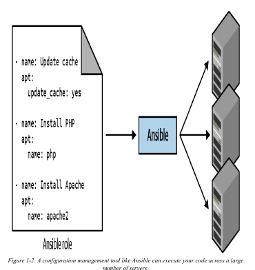
على سبيل المثال، عشان تطبق الـ role اللي اسمه web-server.yml على خمسة servers، أول حاجة بتعمل ملف اسمه hosts فيه الـ IP addresses بتاعة الـ servers دي:
xxxxxxxxxx[webservers]11.11.11.1111.11.11.1211.11.11.1311.11.11.1411.11.11.15بعد كده، بتعرّف الـ Ansible playbook ده:
xxxxxxxxxxhostswebservers roleswebserverوفي الآخر، بتنفذ الـ playbook بالشكل ده:
xxxxxxxxxxansible-playbook playbook.ymlده بيخلي Ansible يعمل configure للخمسة servers كلهم in parallel (على التوازي).
أو كحل بديل، عن طريق إنك تظبط parameter اسمه serial في الـ playbook، تقدر تعمل حاجة اسمها rolling deployment، وده بيحدّث الـ servers على دفعات (batches). على سبيل المثال، لما تظبط serial على 2، ده بيخلي Ansible يحدّث اتنين servers في كل مرة، لحد ما الخمسة كلهم يخلصوا. عشان تكرر أي جزء من الـ logic ده في ad hoc script، هتحتاج عشرات، أو يمكن مئات، من سطور الـ code.
Server Templatingبديل للـ configuration management شعبيته بتزيد مؤخرًا هو أدوات الـ server templating زي Docker، وPacker، وVagrant. بدل ما تشغّل مجموعة servers وتعملهم configure بإنك تشغل نفس الـ code على كل واحد فيهم، الفكرة ورا أدوات الـ server templating هي إنك تعمل image من الـ server. الـ image دي بتكون زي "صورة" أو snapshot كاملة ومتكاملة من نظام التشغيل (OS)، والـ software، والملفات، وكل التفاصيل التانية المهمة. بعد كده تقدر تستخدم أداة IaC تانية عشان تعمل install للـ image دي على كل الـ servers بتاعتك، زي ما هو واضح في شكل 1-3.
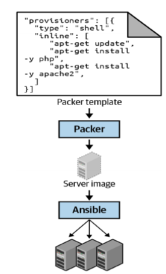
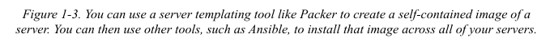
فيه فئتين كبار من الأدوات اللي بتتعامل مع الـ images (شكل 1-4):
Virtual machines
الـ virtual machine (VM) بتحاكي نظام كمبيوتر كامل، بما في ذلك الـ hardware. أنت بتشغّل hypervisor، زي VMware، VirtualBox، أو Parallels، عشان تعمل virtualize
الميزة في ده إن أي VM image بتشغلها فوق الـ hypervisor بتقدر تشوف بس الـ hardware اللي معمول له virtualize، فبتبقى معزولة تمامًا عن الـ host machine وأي VM images تانية، وهتشتغل بنفس الطريقة بالظبط في كل الـ environments (زي جهازك، أو QA server، أو production server). العيب هو إن عملية الـ virtualization لكل الـ hardware ده وتشغيل OS منفصل تمامًا لكل VM بيسبب overhead كبير من ناحية استهلاك الـ CPU، واستهلاك الـ memory، ووقت التشغيل (startup time). تقدر تعرّف الـ VM images كـ code باستخدام أدوات زي
Packer وVagrant.
Containers
الـ container بيحاكي الـ user space بتاع الـ OS. أنت بتشغّل container engine، زي Docker، أو CoreOS rkt، أو cri-o، عشان تعمل processes معزولة، وmemory، وmount points، وnetworking.
الميزة في ده إن أي container بتشغله فوق الـ container engine بيقدر يشوف بس الـ user space بتاعه، فبيبقى معزول عن الـ host machine والـ containers التانية، وهيشتغل بنفس الطريقة بالظبط في كل الـ environments (جهازك، QA server، production server، إلخ). العيب هو إن كل الـ containers اللي شغالة على server واحد بتشارك نفس الـ kernel والـ hardware بتاع الـ OS بتاع السيرفر ده، فبيبقى أصعب بكتير إنك توصل لنفس مستوى العزل والأمان اللي بتاخده مع الـ VM. بس، عشان الـ kernel والـ hardware مشتركين، الـ containers بتاعتك بتقدر تقوم في أجزاء من الثانية (milliseconds) وتقريبًا مفيش أي overhead على الـ CPU أو الـ memory. تقدر تعرّف الـ container images كـ code باستخدام أدوات زي Docker وCoreOS rkt؛ وهتشوف مثال على إزاي تستخدم Docker في الفصل السابع.
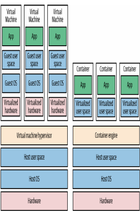
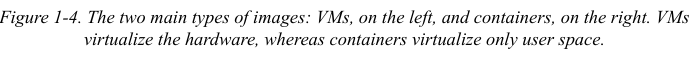
على سبيل المثال، ده Packer template اسمه web-server.json بيعمل Amazon Machine Image (AMI)، ودي عبارة عن VM image تقدر تشغلها على AWS:
x
{ "builders": [{ "ami_name": "packer-example-", "instance_type": "t2.micro", "region": "us-east-2", "type": "amazon-ebs", "source_ami": "ami-0fb653ca2d3203ac1", "ssh_username": "ubuntu" }], "provisioners": [{ "type": "shell", "inline": [ "sudo apt-get update", "sudo apt-get install -y php apache2", "sudo git clone https://github.com/brikis98/php-app.git /var/www/html/app" ], "environment_vars": [ "DEBIAN_FRONTEND=noninteractive" ], "pause_before": "60s" }]}الـ Packer template ده بيعمل configure لنفس الـ Apache web server اللي شفته في setup-webserver.sh باستخدام نفس كود الـ Bash. الفرق الوحيد بين الكود في الـ Packer template والأمثلة اللي فاتت هو إن الـ Packer template ده مش بيبدأ الـ Apache web server (يعني مش بينفذ أمر زي sudo service apache2 start). وده لأن الـ server templates عادةً بتستخدم عشان تعمل install للـ software في الـ images، لكن لما بتشغل الـ image بس —زي مثلًا لما بتعملها deploy على server— هو ده الوقت اللي المفروض تشغل فيه الـ software ده فعلًا.
عشان تبني AMI من الـtemplate ده، شغّل packer build webserver.json. بعد ما الـ build يخلص، تقدر تعمل install للـ AMI دي على كل الـ AWS servers بتاعتك، وتعمل configure لكل server إنه يشغّل Apache لما الـ server بيعمل booting (وهتشوف مثال على ده في الجزء الجاي)، وكلهم هيشتغلوا بنفس الطريقة بالظبط.
خد بالك إن أدوات الـ server templating المختلفة ليها أغراض مختلفة شوية. Packer عادةً بيستخدم عشان يعمل images بتشغلها مباشرة على production servers، زي AMI بتشغلها في
الـ production AWS account بتاعك. Vagrant عادةً بيستخدم عشان يعمل images بتشغلها على أجهزة الـ development بتاعتك، زي VirtualBox image بتشغلها على اللابتوب بتاعك سواء Mac أو Windows. Docker عادةً بيستخدم عشان يعمل images لـ applications منفردة. تقدر تشغل الـ Docker images على أجهزة الـ production أو الـ development، طالما فيه أداة تانية عملت configure للجهاز ده بالـ Docker Engine. على سبيل المثال، فيه]patternشائع هو إنك تستخدم Packer عشان تعمل AMI يكون عليها Docker Engine، وبعدين تعمل deploy للـ AMI دي على cluster من الـ servers في الـ AWS account بتاعك، وبعدين تعمل deploy لـ Docker containers منفردة على الـ cluster ده عشان تشغل الـ applications بتاعتك.
الـ Server templating هو مكون أساسي في التحول لـ immutable infrastructure. الفكرة دي مستوحاة من الـ functional programming، اللي فيها variables بتكون immutable، فبعد ما تدي للمتغير قيمة، متقدرش تغير المتغير ده تاني أبدًا. لو محتاج تحدث حاجة، بتعمل متغير جديد. عشان المتغيرات عمرها ما بتتغير، بيبقى أسهل بكتير إنك تفهم الـ code بتاعك.
الفكرة ورا الـ immutable infrastructure شبهها: بمجرد ما تعمل deploy لـ server، أنت عمرك ما بتعمل عليه تغييرات تاني. لو محتاج تحدث حاجة، زي إنك تعمل deploy لـ version جديدة من الـ code بتاعك، أنت بتعمل image جديدة من الـ server template بتاعك وتعملها deploy على server جديد. عشان الـ servers عمرها ما بتتغير، بيبقى أسهل بكتير إنك تفهم إيه اللي معمول له `depl
Orchestrationأدوات الـ Server templating ممتازة عشان تعمل VMs و containers، بس إزاي بتعملهم manage فعلًا؟ لمعظم الـ use cases اللي على أرض الواقع، هتحتاج طريقة تعمل بيها الحاجات دي:
تعمل deploy للـ VMs والـ containers، وتستغل الـ hardware بتاعك بكفاءة.
تعمل roll out للـ updates لأسطول موجود من الـ VMs والـ containers باستخدام استراتيجيات زي rolling deployment، وblue-green deployment، وcanary deployment.
تراقب (health) الـ VMs والـ containers بتاعتك، وتبدل اللي مش سليم منهم أوتوماتيك (auto healing).
تعمل scale لعدد الـ VMs والـ containers سواء بالزيادة أو النقصان كاستجابة
للـ load (auto scaling).
توزع الـ traffic على الـ VMs والـ containers بتاعتك (load balancing).
تسمح للـ VMs والـ containers بتاعتك إنها تلاقي وتكلم بعضها على الشبكة
(service discovery).
التعامل مع المهام دي هو شغل أدوات الـ orchestration زي Kubernetes، وMarathon/Mesos، وAmazon Elastic Container Service (Amazon ECS)، وDocker Swarm، وNomad. على سبيل المثال، Kubernetes بيسمح لك تعرّف إزاي تعمل manage للـ Docker containers بتاعتك كـ code. أنت الأول بتعمل deploy لـ Kubernetes cluster، وده عبارة عن مجموعة servers هيعملها Kubernetes manage ويستخدمها عشان يشغّل الـ Docker containers بتاعتك. معظم مزودي خدمات الـ cloud الكبار عندهم دعم أساسي عشان تعمل deploy لـ Kubernetes clusters مُدارة (managed)، زي Amazon Elastic Kubernetes Service (EKS)، وGoogle Kubernetes Engine (GKE)، وAzure Kubernetes Service (AKS).
لما يبقى عندك cluster شغال، تقدر تعرّف إزاي تشغل الـ Docker container بتاعك كـ code في ملف YAML:
xxxxxxxxxxapiVersionapps/v1kindDeploymentmetadata nameexample-appspec selector matchLabels appexample-app replicas3 strategy rollingUpdate maxSurge3 maxUnavailable0 typeRollingUpdate template metadata labels appexample-app spec containersnameexample-app imagehttpd2.4.39 portscontainerPort80الملف ده بيدي تعليمات لـ Kubernetes إنه يعمل Deployment، ودي طريقة declarative (توصيفية) عشان تعرّف الحاجات دي:
واحد أو أكتر من الـ Docker containers يشتغلوا مع بعض. المجموعة دي من الـ containers اسمها Pod. الـ Pod اللي متعرّف في الكود اللي فوق فيه Docker container واحد بيشغل Apache.
الإعدادات لكل Docker container جوه الـ Pod. الـ Pod في الكود اللي فات بيعمل configure لـ Apache عشان يستمع على port 80.
كام نسخة (replicas) من الـ Pod دي عايز تشغلها في الـ cluster بتاعك. الكود اللي فات بيعمل configure لـ 3 replicas. Kubernetes بيحدد أوتوماتيكيًا فين في الـ cluster بتاعك يعمل deploy لكل Pod، باستخدام scheduling algorithm عشان يختار أفضل servers من ناحية الـ high availability (زي إنه يحاول يشغل كل Pod على server منفصل عشان لو server واحد وقع، الـ app بتاعك ميقعش)، والـ resources (زي إنه يختار servers فيها الـ ports والـ CPU والـ memory والموارد التانية المطلوبة متاحة)، والأداء (performance) (زي إنه يحاول يختار servers عليها أقل load وأقل عدد من الـ containers)، وهكذا. Kubernetes كمان بيراقب الـ cluster باستمرار عشان يتأكد إن فيه دايمًا 3 replicas شغالين، وبيبدل أي Pods تقع أو تبطل تستجيب أوتوماتيكيًا.
إزاي تعمل deploy للـ updates. لما بتعمل deploy لـ version جديدة من الـ Docker container، الكود اللي فات بيعمل roll out لـ 3 replicas جديدة، ويستناها لحد ما تبقى healthy، وبعدين بيمسح الـ 3 replicas القديمة.
دي قوة كبيرة في كام سطر YAML بس! أنت بتشغل kubectl apply -f example-app.yml عشان تدي تعليمات لـ Kubernetes إنه يعمل deploy للـ app بتاعك. بعد كده تقدر تعمل تغييرات في ملف الـ YAML وتشغل kubectl apply تاني عشان تعمل roll out للـ updates. تقدر كمان تعمل manage للـ Kubernetes cluster والـ apps اللي جواه باستخدام Terraform؛ وهتشوف مثال على ده في الفصل السابع.
Provisioningفي حين إن أدوات الـ configuration management، والـ server templating، والـ orchestration بتعرّف الكود اللي بيشتغل على كل server، أدوات الـ provisioning زي Terraform، وCloudFormation، وOpenStack Heat، وPulumi مسؤولة عن إنها تنشئ الـ servers نفسها. في الحقيقة، أنت تقدر تستخدم أدوات الـ provisioning عشان تنشئ مش بس servers، لكن كمان databases، وcaches، وload balancers، وqueues، وmonitoring، وsubnet configurations، وfirewall settings، وrouting rules، وSecure Sockets Layer (SSL) certificates، وتقريبًا كل جانب تاني من الـ infrastructure بتاعتك، زي ما هو واضح في شكل 1-5.
على سبيل المثال، الكود التالي بيعمل deploy لـ web server باستخدام Terraform:
xxxxxxxxxxresource "aws_instance" "app" { instance_type = "t2.micro" availability_zone = "us-east-2a" ami = "ami-0fb653ca2d3203ac1"
user_data = <<-EOF #!/bin/bash sudo service apache2 start EOF}متقلقش لو لسه مش متعود على بعض الـ syntax. دلوقتي، ركز بس على اتنين parameters:
ami
الـ parameter ده بيحدد الـ ID بتاع AMI عشان نعملها deploy على الـ server.
أنت ممكن تظبط الـ parameter ده على الـ ID بتاع AMI مبنية من الـ Packer template اللي اسمه web-server.json اللي شفناه في الجزء اللي فات، واللي فيه PHP، وApache، والـ source code بتاع الـ application.
user_data
ده Bash script بيتنفذ لما الـ web server بيقوم (booting). الكود اللي فات بيستخدم الـ script ده عشان يقوّم Apache.
بمعنى آخر، الكود ده بيوريك الـ provisioning والـ server templating شغالين مع بعض، وده pattern شائع في الـ immutable infrastructure.
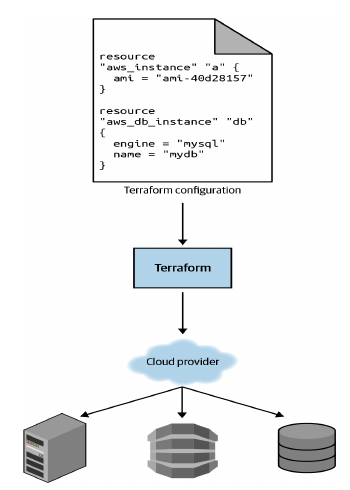
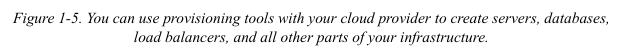
Infrastructure as Code؟دلوقتي بعد ما شفت كل الأنواع المختلفة من الـ IaC، سؤال كويس تسأله هو، ليه نتعب نفسنا؟ ليه نتعلم شوية لغات وأدوات جديدة ونشيل نفسنا هم code زيادة نديرُه؟
الإجابة هي إن الـ code قوي. في مقابل الاستثمار المبدئي بتاع تحويل ممارساتك اليدوية لـ code، أنت بتاخد تحسينات ضخمة في قدرتك على تسليم الـ software. حسب تقرير State of DevOps لسنة 2016، المنظمات اللي بتستخدم ممارسات DevOps، زي الـ IaC، بتعمل deploy أكتر بـ 200 مرة، وبتتعافى من الـ failures أسرع بـ 24 مرة، والـ lead times بتاعتها أقل بـ 2,555 مرة.
لما الـ infrastructure بتاعتك بتبقى متعرّفة كـ code، بتقدر تستخدم مجموعة واسعة من ممارسات الـ software engineering عشان تحسن عملية الـ software delivery بتاعتك بشكل كبير، واللي منها الآتي:
Self-service
معظم الفرق اللي بتعمل deploy للكود يدويًا بيبقى عندها عدد قليل من الـ sysadmins (كتير بيبقى واحد بس) هما بس اللي عارفين كل magic incantations عشان يخلوا الـ deployment يشتغل وهما بس اللي معاهم access على الـ production. ده بيتحول لعنق زجاجة (bottleneck) كبير مع نمو الشركة. لو الـ infrastructure بتاعتك متعرّفة في code، عملية الـ deployment كلها ممكن تبقى automated، والـ developers يقدروا يبدأوا الـ deployments بتاعتهم بنفسهم وقت ما يحتاجوا.
السرعة والأمان (Speed and safety)
لو عملية الـ deployment معمولة automation، هتبقى أسرع بكتير، لأن الكمبيوتر يقدر ينفذ خطوات الـ deployment أسرع بكتير من الإنسان، وأأمن، بما إن العملية الـ automated هتكون consistent أكتر، وrepeatable أكتر، ومش عُرضة للخطأ اليدوي.
Documentation
لو حالة الـ infrastructure بتاعتك محبوسة في دماغ sysadmin واحد، والـ sysadmin ده طلع أجازة أو ساب الشركة أو خبطته عربية، ممكن فجأة تكتشف إنك مبقتش قادر تدير الـ infrastructure بتاعتك. على الناحية التانية، لو الـ infrastructure بتاعتك متعرّفة كـ code، فحالة الـ infrastructure بتاعتك بتبقى في source files أي حد يقدر يقرأها. بمعنى آخر، الـ IaC بيشتغل كـ documentation، وبيسمح لكل الناس في الشركة إنها تفهم الدنيا ماشية إزاي، حتى لو الـ sysadmin في أجازة.
Version control
تقدر تخزن ملفات الـ source بتاعة الـ IaC بتاعتك في version control، وده معناه إن تاريخ الـ infrastructure بتاعك بالكامل بقى متسجل في الـ commit log. وده بيتحول لأداة قوية عشان تعمل debug للمشاكل، لأنه في أي وقت تظهر مشكلة، أول خطوة هتعملها هي إنك تبص على الـ commit log وتعرف إيه اللي اتغير في الـ infrastructure بتاعتك، وتاني خطوة ممكن تكون إنك تحل المشكلة ببساطة بإنك ترجع لـ version قديمة ومعروف إنها سليمة (known-good) من كود الـ IaC بتاعك.
التحقق (Validation)
لو حالة الـ infrastructure بتاعتك متعرّفة في code، فمع كل تغيير، تقدر تعمل code review، وتشغل مجموعة automated tests، وتعدّي الـ code على أدوات static analysis—وكل دي ممارسات معروف إنها بتقلل فرصة حدوث الـ defects بشكل كبير.
إعادة الاستخدام (Reuse)
تقدر "package" الـ infrastructure بتاعتك في modules قابلة لإعادة الاستخدام (reusable) عشان بدل ما تعمل كل deployment لكل منتج في كل environment من الصفر، تقدر تبني فوق أجزاء (pieces) معروفة، ومتوثقة (documented)، ومتجربة في المعركة (battle-tested).
السعادة (Happiness)
فيه سبب تاني مهم جدًا، وكتير بيتم تجاهله، لـ ليه المفروض تستخدم IaC: السعادة. إنك تعمل deploy للكود وتدير الـ infrastructure يدويًا ده شيء متكرر وممل. الـ Developers والـ sysadmins بيكرهوا النوع ده من الشغل، لأنه مفيش فيه إبداع، ولا تحدي، ولا تقدير. ممكن تعمل deploy للكود بشكل مثالي لشهور، ومحدش ياخد باله—لحد ما يجي اليوم اللي تبوظ فيه الدنيا. وده بيخلق بيئة مرهقة ومش لطيفة. الـ IaC بتقدم بديل أفضل بيسمح للكمبيوترات تعمل اللي هي شاطرة فيه (automation) والـ developers يعملوا اللي هما شاطرين فيه (coding).
دلوقتي بعد ما بقى عندك فكرة عن ليه الـ IaC مهم، السؤال اللي بعده هو هل Terraform هو أفضل أداة IaC ليك. عشان أجاوب على ده، الأول هديك شرح تمهيدي سريع جدًا عن إزاي Terraform بيشتغل، وبعدها هقارنه بخيارات الـ IaC المشهورة التانية الموجودة، زي Chef، وPuppet، وAnsible.
Terraform بيشتغل؟دي نظرة عامة ومبسطة شوية لـ إزاي Terraform بيشتغل. Terraform هي أداة open source عملتها شركة HashiCorp ومكتوبة بلغة برمجة Go. الـ code بتاع Go بيتعمله compile ويتحول لـ binary واحد (أو بمعنى أصح، binary لكل نظام تشغيل مدعوم)، واسمه، ومش مفاجأة، terraform.
تقدر تستخدم الـ binary ده عشان تعمل deploy للـ infrastructure من اللابتوب بتاعك أو من build server أو من أي كمبيوتر تاني تقريبًا، ومش محتاج تشغل أي infrastructure زيادة عشان ده يحصل. وده لأن من ورا الكواليس، الـ binary بتاع terraform بيعمل API calls بالنيابة عنك لواحد أو أكتر من الـ providers، زي AWS، وAzure، وGoogle Cloud، وDigitalOcean، وOpenStack، وغيرهم. ده معناه إن Terraform بيقدر يستفيد من الـ infrastructure اللي الـ providers دول مشغلينها أصلًا للـ API servers بتاعتهم، وكمان آليات الـ authentication اللي أنت بتستخدمها معاهم أصلًا (زي الـ API keys اللي عندك أصلًا لـ AWS).
طب إزاي Terraform بيعرف إيه الـ API calls اللي المفروض يعملها؟ الإجابة هي إنك بتعمل
Terraform configurations، ودي عبارة عن ملفات نصية بتحدد فيها إيه الـ infrastructure اللي عايز تعملها. الـ Configurations دي هي الـ code في جملة infrastructure as code. ده مثال لـ Terraform configuration:
resource "aws_instance" "example" { ami = "ami-0fb653ca2d3203ac1" instance_type = "t2.micro"}
resource "google_dns_record_set" "a" { name = "demo.google-example.com" managed_zone = "example-zone" type = "A" ttl = 300 rrdatas = [aws_instance.example.public_ip]}حتى لو عمرك ما شفت كود Terraform قبل كده، مش هتلاقي صعوبة كبيرة في قرايته. الجزء ده من الكود بيدي تعليمات لـ Terraform إنه يعمل API calls لـ AWS عشان يعمل deploy لـ server، وبعدين يعمل API calls لـ Google Cloud عشان يعمل entry في الـ Domain Name System (DNS) بيشاور على الـ IP address بتاع الـ server بتاع AWS. بمجرد syntax واحد بسيط (واللي هتتعلمه في الفصل التاني)، Terraform بيسمح لك تعمل deploy لـ resources مترابطة على أكتر من cloud provider.
تقدر تعرّف الـ infrastructure بتاعتك كلها—servers، databases، load balancers، network topology، وهكذا—في ملفات Terraform configuration وتعمل commit للملفات دي
لـ version control. بعد كده بتشغل أوامر Terraform معينة، زي terraform apply، عشان تعمل deploy للـ infrastructure دي. الـ binary بتاع terraform بيعمل parse للكود بتاعك، ويترجمه لسلسلة من الـ API calls للـ cloud providers اللي موجودين في الكود، وبينفذ الـ API calls دي بأكبر كفاءة ممكنة بالنيابة عنك، زي ما هو واضح في شكل 1-6.
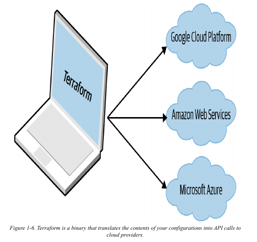
Terraform بأدوات IaC التانية؟الـ Infrastructure as code حاجة رائعة، بس عملية اختيار أداة IaC مش كده خالص. كتير من أدوات الـ IaC شغلها متداخل مع بعض. كتير منها open source. وكتير منها بيقدم دعم تجاري (commercial support). إلا لو كنت استخدمت كل واحدة بنفسك، مش بيبقى واضح إيه المعايير اللي المفروض تستخدمها عشان تختار دي أو دي.
اللي بيصعب الموضوع أكتر هو إن معظم المقارنات اللي هتلاقيها بين الأدوات دي مش بتعمل أكتر من إنها بترص الخصائص العامة لكل واحدة، وبتخلي الموضوع يبان كأنك ممكن تنجح بنفس الدرجة مع أي واحدة فيهم. ورغم إن ده صحيح من الناحية التقنية، بس هو مش مفيد. ده عامل زي ما تكون بتقول لمبرمج مبتدئ إنه ممكن ينجح بنفس الدرجة لو بنى موقع بـ PHP أو C أو assembly—جملة صحيحة من الناحية التقنية، بس بتغفل كمية معلومات ضخمة ضرورية عشان تاخد قرار سليم.
في الأجزاء الجاية، هعمل مقارنة تفصيلية بين أشهر أدوات الـ configuration management والـ provisioning: Terraform، Chef، Puppet، Ansible، Pulumi، CloudFormation، و OpenStack Heat. هدفي هو إني أساعدك تقرر إذا كان Terraform اختيار كويس عن طريق إني أشرح ليه شركتي، Gruntwork، اختارت Terraform كأداة IaC المفضلة عندنا، وبشكل ما، ليه كتبت الكتاب ده. زي كل القرارات التقنية، الموضوع عبارة عن trade-offs (مفاضلات) وأولويات، وحتى لو أولوياتك الشخصية مختلفة عن أولوياتي، أتمنى إن مشاركة طريقة التفكير دي تساعدك تاخد قرارك بنفسك.
دي الـ trade-offs الأساسية اللي لازم تاخدها في اعتبارك:
Configuration management مقابل provisioning
Mutable infrastructure مقابل immutable infrastructure
Procedural language مقابل declarative language
General-purpose language مقابل domain-specific language
Master مقابل masterless
Agent مقابل agentless
العرض المدفوع مقابل المجاني (Paid versus free offering)
مجتمع كبير مقابل مجتمع صغير (Large community versus small community)
ناضجة (Mature) مقابل حديثة جدًا (cutting-edge)
استخدام أكتر من أداة مع بعض
Configuration Management مقابل Provisioningزي ما شفت قبل كده، Chef وPuppet وAnsible كلهم أدوات configuration management، في حين إن CloudFormation وTerraform وOpenStack Heat وPulumi كلهم أدوات provisioning.
ورغم إن الفرق مش واضح تمامًا، بما إن أدوات الـ configuration management بتقدر عادةً تعمل درجة معينة من الـ provisioning (مثلًا، تقدر تعمل deploy لـ server بـ Ansible) وإن أدوات الـ provisioning بتقدر عادةً تعمل درجة معينة من الـ configuration (مثلًا، تقدر تشغل configuration scripts على كل server بتعمله provision بـ Terraform)، أنت عادةً بتبقى عايز تختار الأداة الأنسب للـ use case بتاعتك.
بالذات، لو بتستخدم أدوات server templating، فالجزء الأكبر من احتياجاتك في الـ configuration management بيبقى اتعمل خلاص. بمجرد ما يبقى عندك image معمول لها build من Dockerfile أو Packer template، كل اللي بيفضل هو إنك تعمل provision للـ infrastructure عشان تشغل الـ images دي. ولما الموضوع بييجي للـ provisioning، أداة provisioning هي اللي هتكون اختيارك الأفضل. في الفصل السابع، هتشوف مثال على إزاي تستخدم Terraform وDocker مع بعض، ودي تركيبة (combination) مشهورة جدًا الأيام دي.
ومع ذلك، لو مش بتستخدم أدوات server templating، فالبديل الكويس هو إنك تستخدم أداة configuration management وأداة provisioning مع بعض. على سبيل المثال، تركيبة مشهورة هي إنك تستخدم Terraform عشان تعمل provision للـ servers بتاعتك و Ansible عشان تعمل configure لكل واحد فيهم.
Mutable Infrastructure مقابل Immutable Infrastructureأدوات الـ Configuration management زي Chef وPuppet وAnsible عادةً بتميل لمبدأ
الـ mutable infrastructure.
على سبيل المثال، لو خليت Chef يعمل install لـ version جديدة من OpenSSL، هو هينفذ الـ software update على الـ servers اللي عندك حاليًا، والتغييرات هتحصل in place (في نفس المكان). مع الوقت، وكل ما بتطبق updates أكتر وأكتر، كل server بيبني تاريخ فريد من التغييرات. نتيجة لده، كل server بيبقى مختلف شوية عن الباقيين، وده بيؤدي لـ configuration bugs صغيرة بتبقى صعبة في تشخيصها وإعادة إنتاجها (دي نفس مشكلة الـ configuration drift اللي بتحصل لما بتدير الـ servers يدويًا، مع إنها بتبقى مشكلة أقل بكتير لما بتستخدم أداة configuration management). حتى مع وجود automated tests، الـ bugs دي صعب تكتشفها؛ تغيير في الـ configuration management ممكن يشتغل تمام في test server، بس نفس التغيير ده ممكن يتصرف بشكل مختلف في production server لأن الـ production server تراكمت عليه تغييرات شهور مش موجودة في الـ test environment.
لو بتستخدم provisioning tool زي Terraform عشان تعمل deploy لـ machine images معمول لها build بـ Docker أو Packer، معظم "التغييرات" بتبقى في الحقيقة deployments لـ server جديد تمامًا. على سبيل المثال، عشان تعمل deploy لـ version جديدة من OpenSSL، هتستخدم Packer عشان تعمل image جديدة بالـ version الجديدة من OpenSSL، وتعمل deploy للـ image دي على مجموعة servers جديدة، وبعدين تمسح الـ servers القديمة. عشان كل deployment بيستخدم immutable images على servers جديدة لسة، الطريقة دي بتقلل احتمالية حدوث bugs الـ configuration drift، وبتخلي أسهل إنك تعرف بالظبط إيه الـ software اللي شغال على كل server، وبتسمح لك تعمل deploy بسهولة لأي version قديمة من الـ software (أي image قديمة) في أي وقت. ده كمان بيخلي الـ automated testing بتاعك فعال أكتر، لأن immutable image اللي بتنجح في اختباراتك في الـ test environment غالبًا هتتصرف بنفس الطريقة بالظبط في الـ production environment.
طبعًا، ممكن تجبر أدوات الـ configuration management إنها تعمل immutable deployments هي كمان، بس دي مش الطريقة الطبيعية (idiomatic) للأدوات دي، في حين إنها طريقة طبيعية لاستخدام أدوات الـ provisioning. ويستاهل نذكر كمان إن طريقة الـ immutable ليها عيوبها. على سبيل المثال، إعادة بناء image من server template وإعادة deploy كل الـ servers بتاعتك عشان تغيير تافه ممكن ياخد وقت طويل. وكمان، الـ immutability بتستمر بس لحد ما تشغل الـ image فعلًا. بعد ما الـ server يقوم ويشتغل، هيبدأ يعمل تغييرات على الـ hard drive ويحصل له درجة معينة من الـ configuration drift (مع إن ده بيقل لو بتعمل deploy بشكل متكرر).
Procedural Language مقابل Declarative LanguageChef و Ansible بيشجعوا على أسلوب procedural بتكتب فيه code بيحدد، خطوة بخطوة، إزاي توصل لحالة نهائية معينة.
Terraform، CloudFormation، Puppet، OpenStack Heat، و Pulumi كلهم بيشجعوا على أسلوب declarative أكتر بتكتب فيه code بيحدد الحالة النهائية اللي أنت عايزها، وأداة الـ IaC نفسها هي المسؤولة عن إنها تكتشف إزاي توصل للحالة دي.
عشان نوضح الفرق، خلينا نشوف مثال. تخيل إنك عايز تعمل deploy لـ 10 servers (EC2 Instances بلغة AWS) عشان تشغل AMI بالـ ID ده ami-0fb653ca2d3203ac1 (Ubuntu 20.04). ده مثال مبسط لـ Ansible template بيعمل ده باستخدام أسلوب procedural:
xxxxxxxxxxec2 count10 imageami-0fb653ca2d3203ac1 instance_typet2.microوده مثال مبسط لـ Terraform configuration بيعمل نفس الحاجة باستخدام أسلوب declarative:
xxxxxxxxxxresource "aws_instance" "example" { count = 10 ami = "ami-0fb653ca2d3203ac1" instance_type = "t2.micro"}في الظاهر، الطريقتين دول ممكن يبانوا شبه بعض، ولما تنفذهم في الأول بـ Ansible أو Terraform، هينتجوا نتائج متشابهة. اللي يهم هو اللي بيحصل لما تحب تعمل تغيير.
على سبيل المثال، تخيل الـ traffic زاد، وعايز تزود عدد الـ servers لـ 15. مع Ansible، الكود الـ procedural اللي كتبته قبل كده مبقاش مفيد؛ لو بس عدلت عدد الـ servers لـ 15 وشغلت الكود ده تاني، هيعمل deploy لـ 15 server جداد، ويبقى عندك 25 في المجموع! عشان كده، أنت محتاج تبقى عارف إيه اللي معمول له deploy أصلًا، وتكتب script procedural جديد تمامًا عشان يضيف الخمسة servers الجداد:
xxxxxxxxxxec2 count5 imageami-0fb653ca2d3203ac1 instance_typet2.microمع الكود الـ declarative، لأن كل اللي بتعمله هو إنك بتوصف الحالة النهائية اللي أنت عايزها وTerraform هو اللي بيعرف إزاي يوصل للحالة دي، Terraform كمان بيبقى عارف أي state هو عملها قبل كده. عشان كده، عشان تعمل deploy لخمسة servers زيادة، كل اللي محتاج تعمله هو إنك ترجع لنفس الـ Terraform configuration وتعدل الـ count من 10 لـ 15:
xxxxxxxxxxresource "aws_instance" "example" { count = 15 ami = "ami-0fb653ca2d3203ac1" instance_type = "t2.micro"}لو طبقت الـ configuration دي، Terraform هيدرك إنه عمل أصلًا deploy لـ 10 servers وبالتالي كل اللي محتاج يعمله هو إنه ينشئ 5 servers جداد. في الحقيقة، قبل ما تطبق الـ configuration دي، تقدر تستخدم أمر plan بتاع Terraform عشان تشوف معاينة (preview) للتغييرات اللي هيعملها:
xxxxxxxxxx$ terraform plan# aws_instance.example[11] will be created+ resource "aws_instance" "example" {+ ami = "ami-0fb653ca2d3203ac1"+ instance_type = "t2.micro"+ (...)}# aws_instance.example[12] will be created+ resource "aws_instance" "example" {+ ami = "ami-0fb653ca2d3203ac1"+ instance_type = "t2.micro"+ (...)}# aws_instance.example[13] will be created+ resource "aws_instance" "example" {+ ami = "ami-0fb653ca2d3203ac1"+ instance_type = "t2.micro"+ (...)}# aws_instance.example[14] will be created+ resource "aws_instance" "example" {+ ami = "ami-0fb653ca2d3203ac1"+ instance_type = "t2.micro"+ (...)}Plan: 5 to add, 0 to change, 0 to destroy.طيب إيه اللي بيحصل لما تبقى عايز تعمل deploy لـ version مختلفة من الـ app، زي AMI ID ami-02bcbb802e03574ba؟ مع الأسلوب الـ procedural، الاتنين Ansible templates اللي فاتوا مبقوش مفيدين تاني، فبتحتاج تكتب template تالت عشان تدور على الـ 10 servers اللي عملتلهم deploy قبل كده (ولا بقوا 15 دلوقتي؟) وتحدّث كل واحد بحرص للـ version الجديدة. مع أسلوب الـ declarative بتاع Terraform، بترجع لنفس ملف الـ configuration بالظبط تاني وببساطة بتغير الـ parameter بتاع الـ ami لـ ami-02bcbb802e03574ba:
xxxxxxxxxxresource "aws_instance" "example" { count = 15 ami = "ami-02bcbb802e03574ba" instance_type = "t2.micro"}طبعًا، الأمثلة دي مبسطة. Ansible بيسمح لك تستخدم tags عشان تبحث عن EC2 Instances موجودة قبل ما تعمل deploy لجديد (مثلًا باستخدام الـ parameters اللي اسمها instance_tags و count_tag)، بس إنك تضطر تعرف الـ logic ده يدويًا لكل resource بتديره بـ Ansible، بناءً على التاريخ اللي فات لكل resource، ممكن يكون معقد بشكل مفاجئ: على سبيل المثال، ممكن تضطر تعمل configure للكود بتاعك يدويًا عشان يدور على الـ Instances الموجودة مش بس بالـ tag لكن كمان بالـ image version، والـ Availability Zone، وparameters تانية. ده بيوضح مشكلتين كبار في أدوات الـ IaC الـ procedural:
الكود الـ Procedural مش بيعبر بشكل كامل عن حالة الـ infrastructure
قراية التلاتة Ansible templates اللي فاتوا مش كافية عشان تعرف إيه اللي معمول له deploy. هتحتاج كمان تعرف الترتيب اللي الـ templates دي اتطبقت بيه. لو كنت طبقتهم بترتيب مختلف، كان ممكن ينتهي بيك الحال بـ infrastructure مختلفة، ودي حاجة متقدرش تشوفها في الـ codebase نفسه. بمعنى آخر، عشان تفهم codebase بتاع Ansible أو Chef، أنت محتاج تعرف التاريخ الكامل لكل تغيير حصل.
الكود الـ Procedural بيحد من إعادة الاستخدام
إعادة استخدام الكود الـ procedural محدودة بطبيعتها لأنك لازم تاخد في اعتبارك يدويًا الحالة الحالية للـ infrastructure. ولأن الحالة دي بتتغير باستمرار، كود استخدمته من أسبوع ممكن ميبقاش صالح للاستخدام لأنه كان مصمم عشان يعدل حالة للـ infrastructure بتاعتك مبقتش موجودة. نتيجة لده، الـ codebases الـ procedural بتميل إنها تكبر وتبقى معقدة مع الوقت.
مع أسلوب Terraform الـ declarative، الكود دايمًا بيمثل أحدث حالة للـ infrastructure بتاعتك. بلمحة واحدة، تقدر تحدد إيه اللي معمول له deploy حاليًا وإزاي معمول له configure، من غير ما تقلق بخصوص التاريخ أو التوقيت. ده كمان بيخلي من السهل إنك تعمل كود قابل لإعادة الاستخدام، لأنك مش محتاج تاخد في اعتبارك يدويًا الحالة الحالية للعالم. بدلًا من كده، أنت بس بتركز على وصف الحالة اللي أنت عايزها، وTerraform هو اللي بيعرف إزاي ينتقل من حالة للتانية أوتوماتيكيًا. نتيجة لده، الـ codebases بتاعة Terraform بتميل إنها تفضل صغيرة وسهلة الفهم.
General-Purpose Language مقابل Domain-Specific LanguageChef و Pulumi بيسمحولك تستخدم لغة برمجة عامة (general-purpose programming language - GPL) عشان تدير الـ infrastructure as code: Chef بيدعم Ruby؛ Pulumi بيدعم مجموعة واسعة من الـ GPLs، منها JavaScript، TypeScript، Python، Go، C#، Java، وغيرهم.
Terraform، وPuppet، وAnsible، وCloudFormation، وOpenStack Heat كل واحد منهم بيستخدم لغة مخصصة لمجال معين (domain-specific language - DSL) عشان يدير الـ infrastructure as code: Terraform بيستخدم HCL؛ Puppet بيستخدم Puppet Language؛ Ansible وCloudFormation وOpenStack Heat بيستخدموا YAML (CloudFormation كمان بيدعم JSON).
الفرق بين الـ GPLs والـ DSLs مش واضح تمامًا—هو أقرب لنموذج فكري مساعد أكتر من كونه تصنيف منفصل ونظيف—بس الفكرة الأساسية هي إن الـ DSLs مصممة للاستخدام في مجال واحد محدد، في حين إن الـ GPLs ممكن تستخدم في مجموعة واسعة من المجالات. على سبيل المثال، كود الـ HCL اللي بتكتبه لـ Terraform بيشتغل بس مع Terraform ومحصور بس في الوظائف اللي Terraform بيدعمها، زي عمل deploy للـ infrastructure. ده على عكس استخدام GPL زي JavaScript مع Pulumi، اللي الكود اللي بتكتبه مش بس يقدر يدير الـ infrastructure باستخدام مكتبات Pulumi، لكن كمان يقدر يعمل تقريبًا أي مهمة برمجية تانية أنت عايزها، زي إنه يشغّل web app (في الحقيقة، Pulumi بيقدم Automation API تقدر تستخدمه عشان تدمج Pulumi جوه الـ application code بتاعك)، وينفذ control logic معقد (loops, conditionals, والـ abstraction كلهم أسهل في الـ GPL عن الـ DSL)، ويشغل عمليات تحقق (validations) واختبارات (tests) مختلفة، ويتكامل مع أدوات وAPIs تانية، وهكذا.
الـ DSLs ليها كذا ميزة على الـ GPLs:
أسهل في التعلم
بما إن الـ DSLs، بحكم تصميمها، بتتعامل مع مجال واحد بس، فهي بتميل إنها تكون لغات أصغر وأبسط من الـ GPLs وبالتالي أسهل في التعلم منها. معظم الـ developers هيقدروا يتعلموا Terraform أسرع من، مثلًا، Java.
أوضح ومختصرة أكتر
بما إن الـ DSLs مصممة لغرض واحد محدد، وكل الكلمات المفتاحية (keywords) في اللغة معمولة عشان تعمل الحاجة دي، الكود المكتوب بالـ DSLs بيميل إنه يكون أسهل في الفهم ومختصر أكتر من الكود المكتوب عشان يعمل نفس الحاجة بالظبط بس مكتوب بـ GPL. الكود اللي بيعمل deploy لـ server واحد في AWS عادةً بيكون أقصر وأسهل في الفهم في Terraform عنه في Java.
موحدة أكتر
معظم الـ DSLs محدودة في اللي بتسمحلك تعمله. ده ليه شوية عيوب، زي ما هذكر كمان شوية، بس واحدة من المزايا هي إن الكود المكتوب بالـ DSLs عادةً بيستخدم structure موحد ومتوقع، فبيبقى أسهل في التصفح والفهم من الكود المكتوب بالـ GPLs، اللي كل developer ممكن يحل نفس المشكلة بطريقة مختلفة تمامًا. فيه طريقة واحدة بس فعلًا لعمل deploy لـ server في AWS باستخدام Terraform؛ فيه ميات الطرق لعمل نفس الحاجة بـ Java.
الـ GPLs كمان ليها كذا ميزة على الـ DSLs:
ممكن متحتاجش تتعلم حاجة جديدة
بما إن الـ GPLs بتستخدم في مجالات كتير، فيه فرصة إنك ممكن متحتاجش تتعلم لغة جديدة خالص. ده حقيقي بالذات في حالة Pulumi، لأنه بيدعم كذا لغة من أشهر اللغات في العالم، منهم JavaScript وPython وJava. لو أنت عارف Java أصلًا، هتقدر تدخل في Pulumi أسرع من لو كنت مضطر تتعلم HCL عشان تستخدم Terraform.
Ecosystem أكبر و tooling أنضج
بما إن الـ GPLs بتستخدم في مجالات كتير، فهي ليها مجتمعات أكبر بكتير وtooling أنضج بكتير من DSL عادي. عدد وجودة بيئات التطوير المتكاملة (IDEs)، والمكتبات، والأنماط (patterns)، وأدوات الاختبار، وهكذا لـ Java بتتفوق بكتير على اللي متاح لـ Terraform.
قوة أكبر
الـ GPLs، بحكم تصميمها، ممكن تستخدم لعمل أي مهمة برمجية تقريبًا، عشان كده هي بتقدم قوة ووظائف أكتر بكتير من الـ DSLs. مهام معينة، زي الـ control logic (loops و conditionals)، والـ automated testing، وإعادة استخدام الكود (code reuse)، والـ abstraction، والتكامل مع أدوات تانية، بتبقى أسهل بكتير مع Java عنها مع Terraform.
Master مقابل Masterlessبشكل افتراضي، Chef و Puppet بيتطلبوا إنك تشغل master server عشان تخزن حالة الـ infrastructure بتاعتك وتوزع الـ updates. كل مرة تحب تحدث حاجة في الـ infrastructure بتاعتك، بتستخدم client (زي أداة command-line) عشان تصدر أوامر جديدة للـ master server، والـ master server يا إما بيعمل push للـ updates دي لكل الـ servers التانية، أو الـ servers دي بتسحب (pull) آخر الـ updates من الـ master server بشكل دوري.
الـ master server بيقدم شوية مزايا. أولًا، هو مكان واحد مركزي تقدر تشوف وتدير منه حالة الـ infrastructure بتاعتك. كتير من أدوات الـ configuration management بتقدم حتى واجهة ويب (web interface) (زي Chef Console، وPuppet Enterprise Console) للـ master server عشان تخلي أسهل إنك تشوف إيه اللي بيحصل. ثانيًا، بعض الـ master servers بتقدر تشتغل باستمرار في الخلفية وتفرض الـ configuration بتاعتك. بالطريقة دي، لو حد عمل تغيير يدوي على server، الـ master server يقدر يرجع التغيير ده عشان يمنع الـ configuration drift.
بس، إنك تضطر تشغل master server ليه عيوب خطيرة:
Infrastructure زيادة
أنت محتاج تعمل deploy لـ server زيادة، أو حتى cluster من الـ servers الزيادة (عشان الـ high availability والـ scalability)، بس عشان تشغل الـ master.
صيانة
أنت محتاج تعمل صيانة، وتحديث، و backup، ومراقبة، و scale للـ master server(s).
أمان
أنت محتاج توفر طريقة للـ client عشان يكلم الـ master server(s) وطريقة للـ master server(s) عشان يكلموا كل الـ servers التانية، وده عادةً معناه إنك تفتح ports زيادة وتعمل configure لأنظمة authentication زيادة، وكل ده بيزود مساحة الهجوم عليك.
Chef و Puppet عندهم درجات متفاوتة من الدعم لوضعيات masterless اللي فيها بتشغل بس الـ agent software بتاعهم على كل server من الـ servers بتاعتك، عادةً بشكل دوري (زي cron job بيشتغل كل خمس دقايق)، وتستخدم ده عشان تسحب (pull down) آخر الـ updates من version control (بدلًا من master server). ده بيقلل عدد الأجزاء المتحركة بشكل كبير، بس، زي ما هشرح في الجزء الجاي، ده لسه بيسيب عدد من الأسئلة من غير إجابة، خصوصًا عن إزاي تعمل provision للـ servers وتعمل install للـ agent software عليها من الأول.
Ansible، CloudFormation، Heat، Terraform، وPulumi كلهم masterless بشكل افتراضي. أو عشان نبقى أدق، بعضهم بيعتمد على master server، بس هو أصلًا جزء من الـ infrastructure اللي أنت بتستخدمها ومش قطعة زيادة محتاج تديرها. على سبيل المثال، Terraform بيكلم الـ cloud providers باستخدام الـ APIs بتاعتهم، فبشكل ما، الـ API servers هي الـ master servers، إلا إنها مش بتتطلب أي infrastructure زيادة أو أي آليات authentication زيادة (يعني استخدم بس الـ API keys بتاعتك). Ansible بيشتغل عن طريق إنه يتصل مباشرة بكل server عن طريق SSH، فمرة تانية، أنت مش محتاج تشغل أي infrastructure زيادة أو تدير آليات authentication زيادة (يعني استخدم بس الـ SSH keys بتاعتك).
Agent مقابل Agentless
Chef وPuppet بيتطلبوا إنك تعمل install لـ agent software (زي Chef Client وPuppet Agent) على كل server عايز تعمل له configure. الـ agent عادةً بيشتغل في الـ background على كل server وهو المسؤول عن إنه يعمل install لآخر updates بتاعة الـ configuration management.
ده ليه شوية عيوب:
Bootstrapping
إزاي بتعمل provision للـ servers بتاعتك وتعمل install للـ agent software عليها من الأول خالص؟ بعض أدوات الـ configuration management بتأجل المشكلة دي، وبتفترض إن فيه external process هو اللي هيتكفل بيها (زي إنك الأول تستخدم Terraform عشان تعمل deploy لمجموعة servers بـ AMI يكون الـ agent معمول له install عليها أصلًا)؛ أدوات configuration management تانية ليها عملية bootstrapping مخصوصة، بتشغل فيها أوامر بتتعمل مرة واحدة (one-off commands) عشان تعمل provision للـ servers باستخدام الـ APIs بتاعة الـ cloud provider وتعمل install للـ agent software على الـ servers دي عن طريق SSH.
Maintenance
أنت محتاج تعمل update للـ agent software بشكل دوري، وتاخد بالك إنك تخليه synchronized مع الـ master server لو فيه واحد. محتاج كمان تعمل monitor للـ agent software وتعمل له restart لو عمل crash.
Security
لو الـ agent software بيسحب الـ configuration من master server (أو أي server تاني لو مش بتستخدم master)، أنت محتاج تفتح outbound ports على كل server. لو الـ master server هو اللي بيعمل push للـ configuration للـ agent، أنت محتاج تفتح inbound ports على كل server. في الحالتين، لازم تشوف طريقة تعمل بيها authenticate للـ agent مع الـ server اللي بيكلمه. كل ده بيزود الـ surface area to attackers.
مرة تانية، Chef و Puppet عندهم درجات متفاوتة من الدعم للـ agentless modes، بس دي بتحس كأنها اتلزقت في الآخر كفكرة جت بعدين (afterthought) ومش بتدعم كل الـ features بتاعة أداة الـ configuration management. عشان كده in the wild (يعني في الاستخدام العملي)، الـ configuration الافتراضي أو الطبيعي (idiomatic) لـ Chef و Puppet غالبًا دايمًا بيكون فيه agent، وعادةً master كمان، زي ما هو واضح في شكل 1-7.
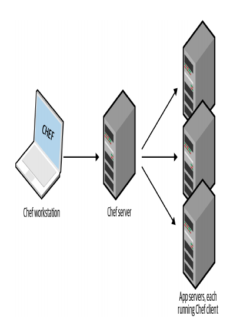
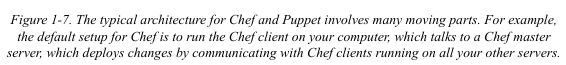
كل الأجزاء المتحركة الزيادة دي بتدخل عدد كبير من الـ failure modes الجديدة في الـ infrastructure بتاعتك. كل مرة يجيلك bug report الساعة 3 الفجر، هتحتاج تعرف إذا كان ده bug في الـ application code بتاعك، أو الـ IaC code بتاعك، أو الـ configuration management client، أو الـ master server(s)، أو الطريقة اللي الـ client بيكلم بيها الـ master server(s)، أو الطريقة اللي الـ servers التانية بتكلم بيها الـ master server(s)، أو...
Ansible، CloudFormation، Heat، Terraform، وPulumi مش بيتطلبوا إنك تعمل install لأي agents زيادة. أو عشان نكون أدق، بعضهم بيتطلب agents، بس دي عادةً بتكون معمولة لها install أصلًا كجزء من الـ infrastructure اللي أنت بتستخدمها. على سبيل المثال، AWS، Azure، Google Cloud، وكل الـ cloud providers التانيين بيتكفلوا بعمل install، وmanage، وauthenticate للـ agent software على كل الـ physical servers بتاعتهم. كمستخدم لـ Terraform، أنت مش محتاج تقلق من أي حاجة من دي: أنت بس بتصدر أوامر (issue commands)، والـ agents بتوع الـ cloud provider بينفذوها بالنيابة عنك على كل الـ servers بتاعتك، زي ما هو واضح في شكل 1-8. مع Ansible، الـ servers بتاعتك محتاجة تشغل الـ SSH daemon، ودي حاجة شائعة إنها تشتغل على معظم الـ servers كده كده.
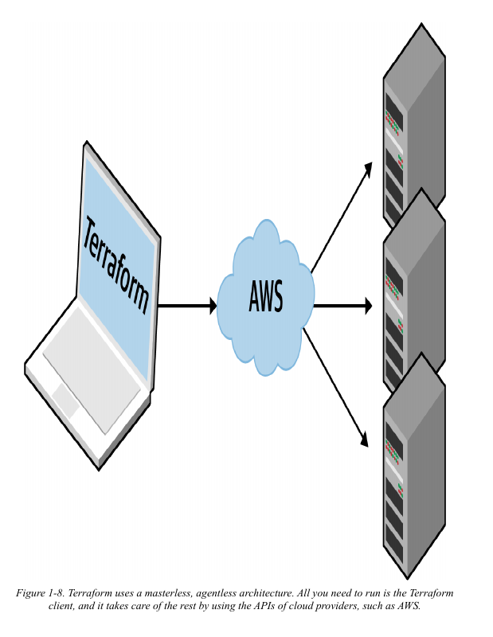
كل الأجزاء المتحركة الزيادة دي بتدخل عدد كبير من الـ failure modes الجديدة في الـ infrastructure بتاعتك. كل مرة يجيلك bug report الساعة 3 الفجر، هتحتاج تعرف إذا كان ده bug في الـ application code بتاعك، أو الـ IaC code بتاعك، أو الـ configuration management client، أو الـ master server(s)، أو الطريقة اللي الـ client بيكلم بيها الـ master server(s)، أو الطريقة اللي الـ servers التانية بتكلم بيها الـ master server(s)، أو...
Ansible، CloudFormation، Heat، Terraform، وPulumi مش بيتطلبوا إنك تعمل install لأي agents زيادة. أو عشان نكون أدق، بعضهم بيتطلب agents، بس دي عادةً بتكون معمولة لها install أصلًا كجزء من الـ infrastructure اللي أنت بتستخدمها. على سبيل المثال، AWS، Azure، Google Cloud، وكل الـ cloud providers التانيين بيتكفلوا بعمل install، وmanage، وauthenticate للـ agent software على كل الـ physical servers بتاعتهم. كمستخدم لـ Terraform، أنت مش محتاج تقلق من أي حاجة من دي: أنت بس بتصدر أوامر (issue commands)، والـ agents بتوع الـ cloud provider بينفذوها بالنيابة عنك على كل الـ servers بتاعتك، زي ما هو واضح في شكل 1-8. مع Ansible، الـ servers بتاعتك محتاجة تشغل الـ SSH daemon، ودي حاجة شائعة إنها تشتغل على معظم الـ servers كده كده.
Paid Versus Free Offering)CloudFormation و OpenStack Heat مجانيين تمامًا: الـ resources اللي بتعملها deploy بالأدوات دي ممكن تكلفك فلوس، بس أنت مش بتدفع أي حاجة عشان تستخدم الأدوات نفسها. Terraform، وChef، وPuppet، وAnsible، وPulumi كلهم متاحين في نسخ مجانية ونسخ مدفوعة: على سبيل المثال، ممكن تستخدم النسخة المجانية والـ open source من Terraform لوحدها، أو ممكن تختار تستخدمها مع منتج HashiCorp المدفوع Terraform Cloud. نقاط الأسعار، والباقات، والـ trade-offs مع النسخ المدفوعة خارج نطاق الكتاب ده. السؤال الوحيد اللي عايز أركز عليه هنا هو هل النسخة المجانية محدودة لدرجة إنك بتبقى مجبر فعلًا تستخدم العرض المدفوع عشان الـ use cases الحقيقية في الـ production.
عشان نكون واضحين، مفيش حاجة غلط في إن شركة تقدم خدمة مدفوعة لواحدة من الأدوات دي؛ في الحقيقة، لو بتستخدم الأدوات دي في الـ production، أنا برشح بقوة إنك تبص على الخدمات المدفوعة، لأن كتير منها يستاهل الفلوس اللي بتتدفع فيه. بس، لازم تبقى مدرك إن الخدمات المدفوعة دي مش تحت سيطرتك—ممكن تفلس، أو يتم الاستحواذ عليها (مثلًا، Chef وPuppet وAnsible كلهم مروا بعمليات استحواذ كان ليها تأثير كبير على عروض منتجاتهم المدفوعة)، أو يغيروا نموذج التسعير بتاعهم (مثلًا، Pulumi غيرت تسعيرها في 2021، وده أفاد بعض المستخدمين بس زود الأسعار حوالي 10 أضعاف على ناس تانية)، أو يغيروا المنتج، أو يوقفوا المنتج خالص—عشان كده مهم تعرف هل أداة الـ IaC اللي اخترتها هتفضل قابلة للاستخدام لو، لسبب ما، مقدرتش تستخدم واحدة من الخدمات المدفوعة دي.
من خبرتي، النسخ المجانية من Terraform وChef وPuppet وAnsible كلها ممكن تستخدم بنجاح في الـ production use cases؛ الخدمات المدفوعة ممكن تخلي الأدوات دي أحسن كمان، بس لو مكنتش متاحة، هتقدر تمشي حالك. Pulumi، على الناحية التانية، أصعب في استخدامه في الـ production من غير العرض المدفوع اللي معروف باسم Pulumi Service.
جزء أساسي من إدارة الـ infrastructure as code هو إدارة الـ state (وهتتعلم إزاي Terraform بيدير الـ state في الفصل التالت)، وPulumi، بشكل افتراضي، بيستخدم Pulumi Service كـ backend لتخزين الـ state. ممكن تحول لـ backends تانية مدعومة لتخزين الـ state، زي Amazon S3، أو Azure Blob Storage، أو Google Cloud Storage، بس الـ documentation بتاع الـ backend بتاع Pulumi بيوضح إن Pulumi Service بس هو اللي بيدعم transactional checkpointing (عشان الـ fault tolerance والـ recovery)، وconcurrent state locking (عشان تمنع إفساد الـ infrastructure state بتاعك في بيئة عمل جماعية)، وencrypted state سواء in transit أو at rest. في رأيي، من غير الـ features دي، مش عملي إنك تستخدم Pulumi في أي نوع من بيئات الـ production (يعني مع أكتر من developer واحد)، عشان كده لو هتستخدم Pulumi، أنت بشكل أو بآخر لازم تدفع عشان Pulumi Service.
Large Community Versus Small Community)كل مرة بتختار تكنولوجيا، أنت كمان بتختار مجتمع. في حالات كتير، الـ ecosystem اللي حوالين المشروع ممكن يكون ليه تأثير أكبر على تجربتك من جودة التكنولوجيا نفسها. المجتمع بيحدد كام واحد بيساهم في المشروع؛ كام plugin وintegration وextension متاحين؛ إيه مدى سهولة إنك تلاقي مساعدة أونلاين (زي blog posts، أسئلة على Stack Overflow)؛ وإيه مدى سهولة إنك توظف حد يساعدك (زي موظف، أو consultant، أو شركة دعم).
صعب تعمل مقارنة دقيقة بين المجتمعات، بس تقدر تلاحظ شوية trends لو بحثت أونلاين. جدول 1-1 بيوضح مقارنة لأشهر أدوات الـ IaC، ببيانات أنا جمعتها في يونيو 2022، منها هل أداة الـ IaC open source ولا closed source، وإيه الـ cloud providers اللي بتدعمها، والعدد الإجمالي للـ contributors والـ stars على GitHub، وعدد المكتبات الـ open source المتاحة للأداة، وعدد الأسئلة المدرجة للأداة دي على Stack Overflow.
IaC| الأداة (Tool) | المصدر (Source) | الـ Cloud | المساهمين (Contributors) | Stars |
|---|---|---|---|---|
| Chef | Open | All | 640 | 6,910 |
| Puppet | Open | All | 571 | 6,581 |
| Ansible | Open | All | 5,328 | 53,479 |
| Pulumi | Open | All | 1,402 | 12,723 |
| CloudFormation | Closed | AWS | ? | ? |
| Heat | Open | All | 395 | 379 |
| Terraform | Open | All | 1,621 | 33,019 |
طبعًا، دي مش مقارنة مثالية apples-to-apples. على سبيل المثال، بعض الأدوات ليها أكتر من repository واحد: مثلًا، Terraform فصل الـ provider code (يعني الكود المخصوص لـ AWS، Google Cloud، Azure، إلخ) في repos منفصلة سنة 2017، فالجدول اللي فات ده بيقلل من حجم النشاط بشكل كبير؛ بعض الأدوات بتقدم بدايل لـ Stack Overflow للأسئلة؛ وهكذا.
مع ذلك، فيه كام trend واضحين. أولًا، كل أدوات الـ IaC في المقارنة دي open source وبتشتغل مع cloud providers كتير، ما عدا CloudFormation، اللي هو closed source وبيشتغل بس مع AWS. ثانيًا، Ansible و Terraform شكلهم هما اللي متصدرين بوضوح من ناحية الشعبية.
Trend تاني مثير للاهتمام نلاحظه هو إزاي الأرقام دي اتغيرت من وقت الطبعة الأولى من الكتاب. جدول 1-2 بيوضح النسبة المئوية للتغيير في كل رقم من القيم اللي جمعتها في الطبعة الأولى في سبتمبر 2016. (ملحوظة: Pulumi مش موجود في الجدول ده، لأنه مكنش جزء من المقارنة دي في الطبعة الأولى من الكتاب).
جدول 1-2. إزاي مجتمعات الـ IaC اتغيرت من سبتمبر 2016
| الأداة (Tool) | (Source) | الـ Cloud | المساهمين (Contributors) | Stars |
|---|---|---|---|---|
| Chef | Open | All | +34% | +56% |
| Puppet | Open | All | +32% | +58% |
| Ansible | Open | All | +258% | +183% |
| CloudFormation | Closed | AWS | ? | ? |
| Heat | Open | All | +40% | +34% |
| Terraform | Open | All | +148% | +476% |
مرة تانية، البيانات هنا مش مثالية، بس كويسة كفاية عشان نلاحظ trend واضح: Terraform و Ansible بيشهدوا نمو انفجاري. الزيادة في عدد الـ contributors، والـ stars، والمكتبات الـ open source، والبوستات على Stack Overflow ضخمة جدًا (through the roof). كل من الأداتين دول عندهم مجتمعات كبيرة ونشطة النهارده، وبناءً على الـ trends دي، من المحتمل إنهم يكبروا أكتر في المستقبل.